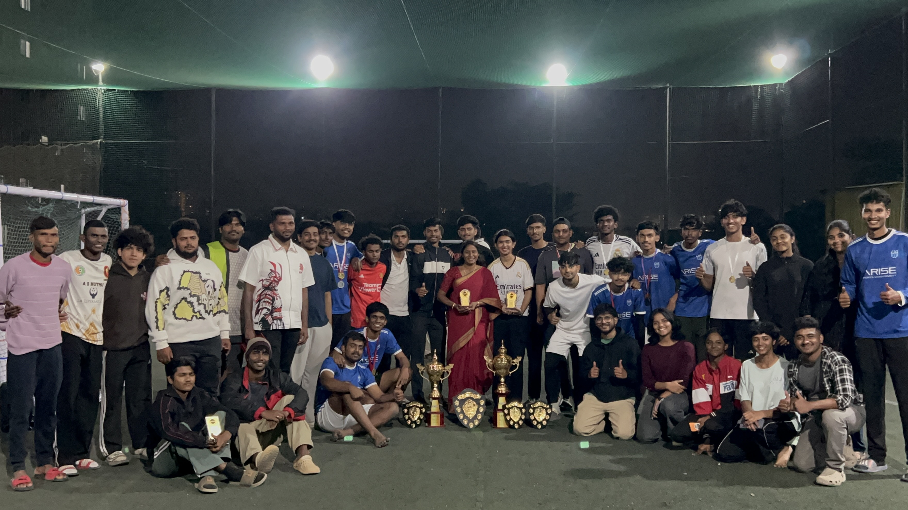
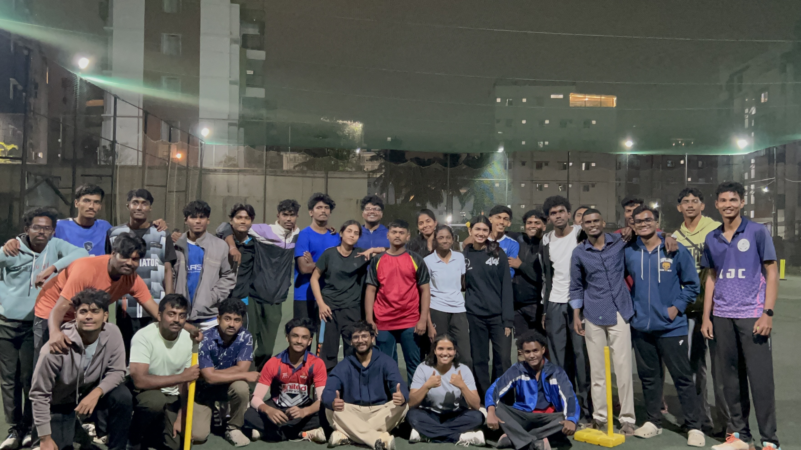
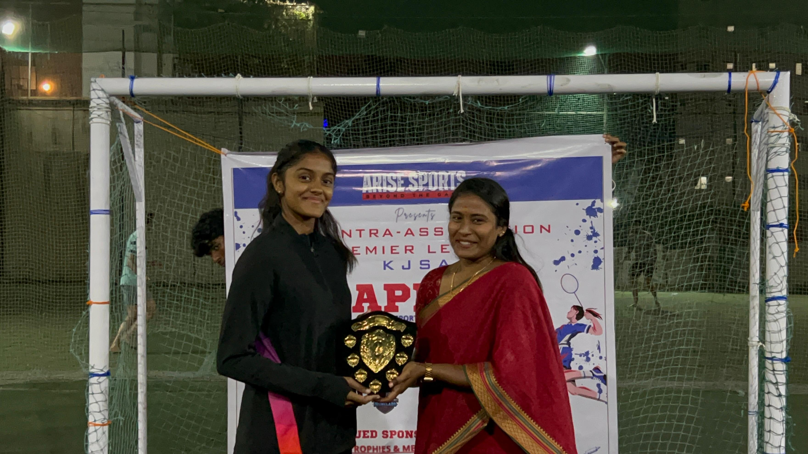
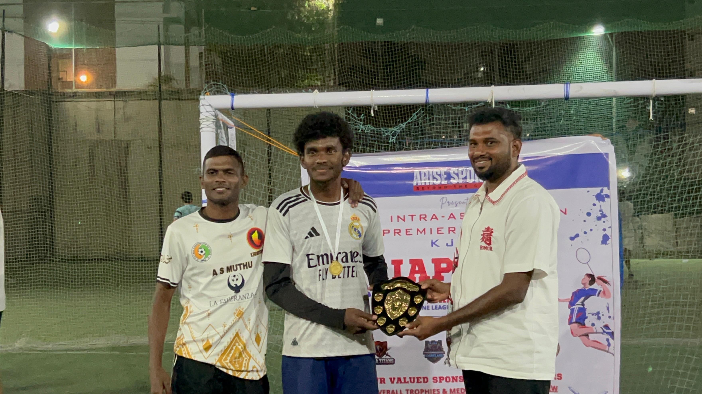
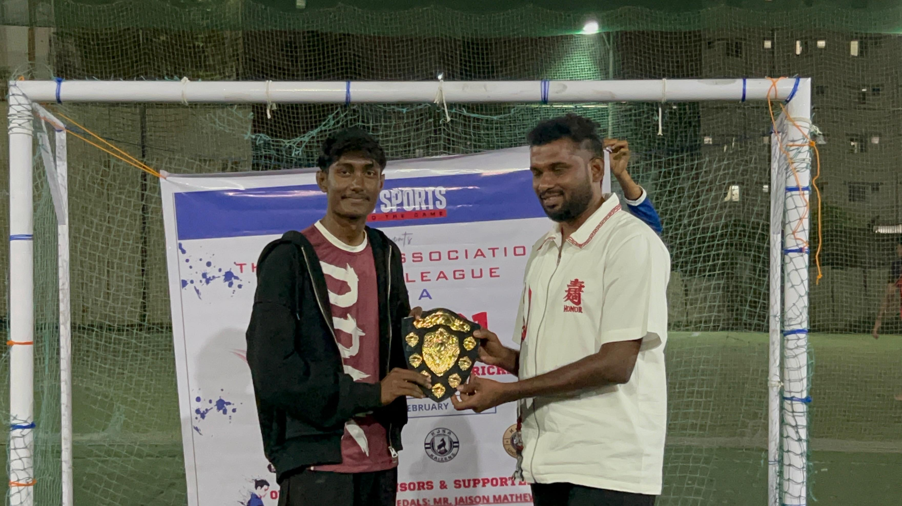

06 / IAPL
INTRA
ASSOCIATION
PREMIER LEAGUE.
IAPL brought the association together for competition, connection and unforgettable championship moments.







06 / IAPL
IAPL brought the association together for competition, connection and unforgettable championship moments.




